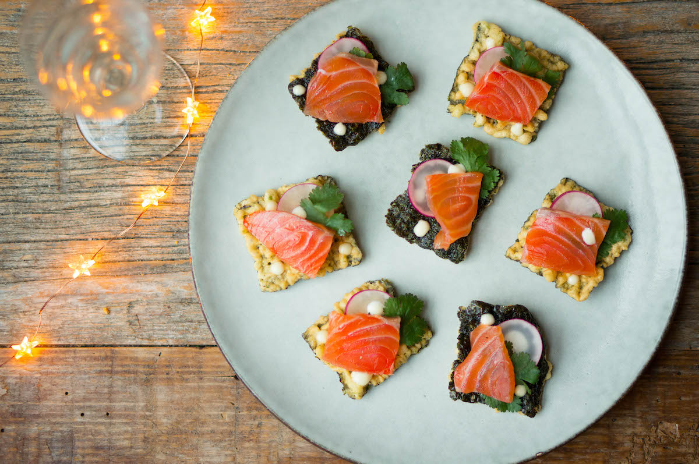
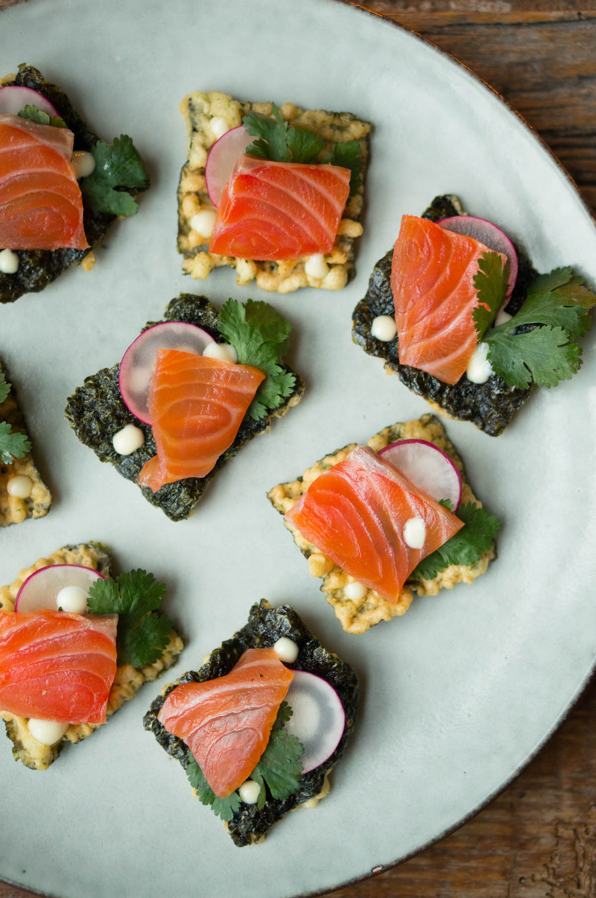

Zalm toastje
Een heerlijk voor proefje voor je begint met je maaltijd.
Ingrediënten
- 400 gram zalm
- 50 ml gin
- 150 gram fijn zeezout
- 125 gram fijne kristalsuiker
- 1 citroen
- 6 jeneverbessen
- 1/2 eetlpel korianderzaad
- 1 eetlepel peperkorrels
voor de toast
- tempura nori crackers of toast
- 3 radijsjes, in dunno plakjes
- handje koriander, alleen de blaadjes
- 3 eetlepels mayoniase
- 1 theelepel gin
Berijdingswijze 1
- Begin 24 uur voordat je de zalm wilt gaan eten met het inleggen van de zalm.
- Rooster alle specerijen in een droge koekenpan tot ze geurig zijn.
- Maal ze daarna fijn in een vijzel of koffiemaler.
- Meng de specerijen met het zout, de suiker, het citroensap en de gin in een kommetje.
- Schep de helft van het mengsel in een bak die niet veel groter is dan het stuk zalm.
- Leg de zalm erop en dek de zalm af met de andere helft van het mengsel.
- Dek de bak af met plasticfolie en zet 12 uur in de koelkast.
- Keer de zalm daarna om en zet weer 12 uur terug in de koelkast.
- Ga je de zalm gebruiken, spoel dan alle specerijen eraf en dep de vis droog met wat keukenpapier.
- Snijd ‘m met een scherp mes in dunne plakjes (sashimi-stijl).
- Lekker met roerei, op eggs benedict, op een bagel of bij je avocado-toast.

Berijdingswijze 2
- Maak eerst de gin-mayonaise.
- Roer daarvoor de gin door de mayonaise en proef of ‘ie op smaak is.
- Giet de gin-mayo eventueel over in een knijpfles, zodat je straks mooie stipjes van de gin-mayo kunt maken op de toast.
- Gebruik je nori tempura crackers, leg dan sommige met de nori kant naar boven en andere met de tempura-kant (dat staat leuk).
- Leg op elk stukje ‘toast’ een plakje radijs en een blaadje koriander.
- Snijd de zalm in lange, dunne plakken en verdeel die in kleinere plakjes.
- Leg de plakjes op de toastjes en maak af met een paar stipjes gin-mayo.
